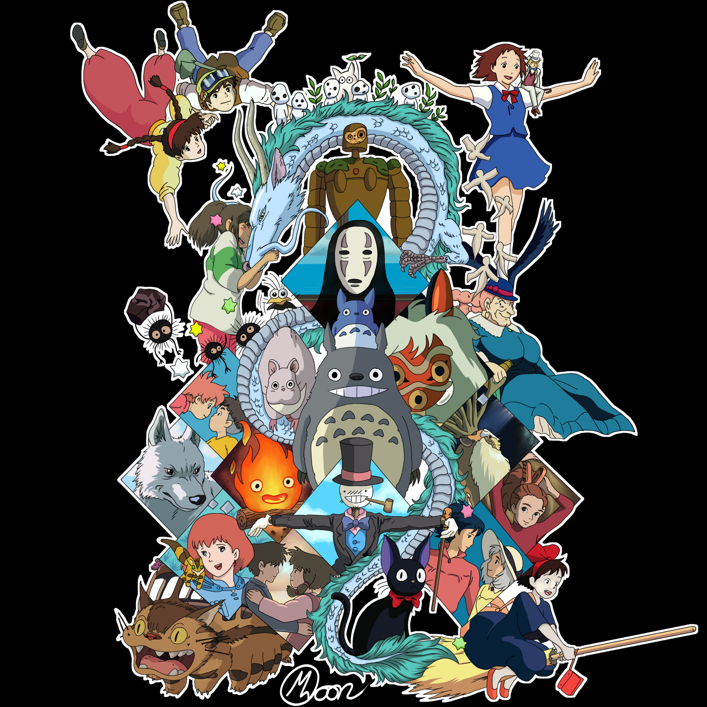

📂 Bienvenido al menú de la historia de Los 25,000 fotogramas  Los 25,000 fotogramas Investigación Cinematográfica Batalla Legal Retiro Reflexivo El Nacimiento de Studio Ghibli Hayao Miyazaki Categoría de animación Geraldine Fernández Pistas